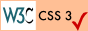

WAGon is a Library/Ecosystem/Proof-of-Concept for working with Weighted Attribute Grammars.
WAGon is designed for researchers and language designers experimenting with WAGs such that they do not have to waste time creating a DSL and parser and can start immediately experimenting with the format itself.
You can read the master thesis which explains more in detail what WAGs are, what WAGon is and why you should care.
WAGon consists out of the following crates:
